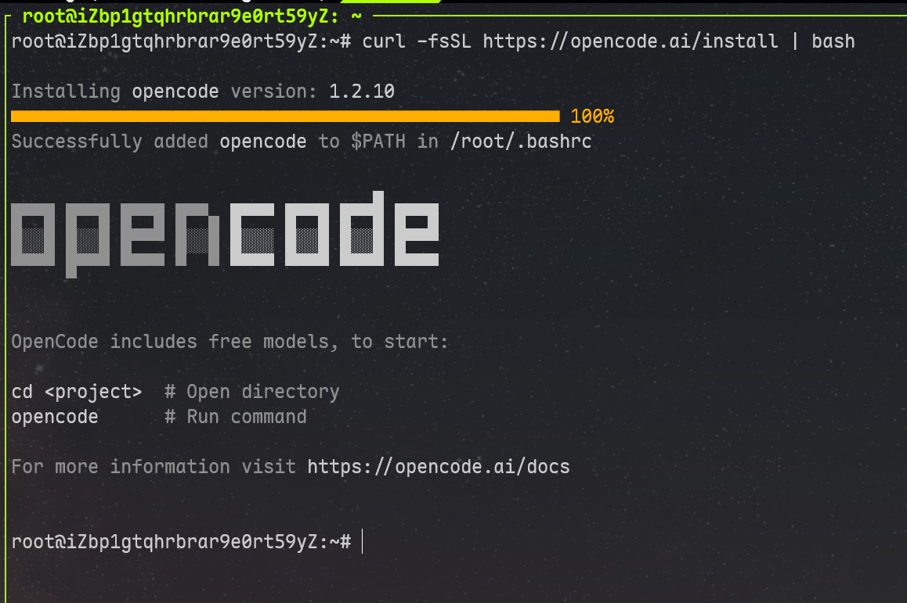
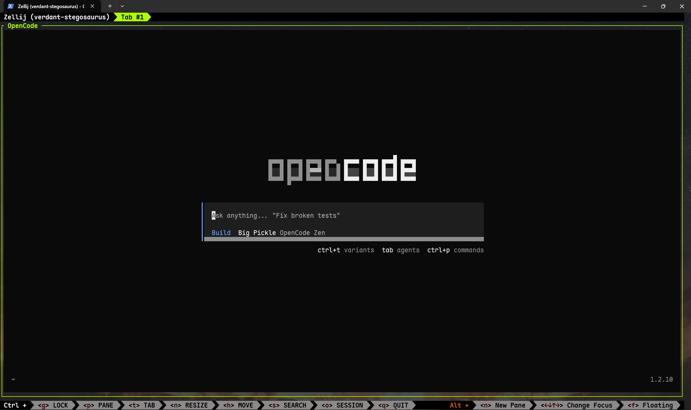

从零开始的AI cli配置
这边做一个AI cli的配置教程，笔者日常使用的是opencode，所以教程主要就以这个为主
从安装 → 联网/证书 → 登录/接入模型 → 配置 opencode.json → 在项目里 /init 跑通 → 常见坑排雷。内容以 OpenCode / opencode 的官方文档为主线
终端是程序员的“指挥舱”，但它长期缺一件东西：能读懂上下文、能解释报错、能按项目风格改代码的助手。OpenCode（命令是
opencode）属于“AI coding agent”这一类：你在项目目录里启动它，它会用 TUI（终端 UI）跟你交互，也支持非交互模式用于脚本化。官方强调它支持多模型/多 provider，并且配置可以全局+项目分层覆盖。(OpenCode)
0xFF 前置条件
- 一个“现代终端”（随便哪个都行；WezTerm/Kitty/Alacritty 这类更舒服）
- 你要用的 LLM Provider 的 API key（OpenAI / Anthropic / Gemini / 各种兼容网关都可以）
- 网络环境：公司/校园网可能需要代理或自定义 CA 证书（后面会讲）
0x1 安装 OpenCode（Linux）
官方给了三条常见路：安装脚本、Node 包安装、发行版包管理器。(OpenCode) 笔者这边建议优先选 安装脚本，其次是 npm 全局安装（如果你习惯 Node 生态的话）。
方案 A：官方安装脚本（推荐）
curl -fsSL https://opencode.ai/install | bash
官方文档把它作为最简单的安装方式。(OpenCode)
方案 B：npm 全局安装（你有 Node.js 时）
官方写法是安装 opencode-ai 这个包：(OpenCode)
npm install -g opencode-ai
方案 C：Arch / AUR（Arch 用户）
官方也给了 pacman/paru 的例子：(OpenCode)
sudo pacman -S opencode # 稳定版
# 或
paru -S opencode-bin # AUR 最新
稍等片刻后，安装完成长这样

然后安装好之后会有一系列配置内容，我们慢慢介绍，接下来直接在命令行里输入 opencode 即可启动，如下

但我们还未接入模型，无法使用，所以接下来介绍接入模型
0x2 接入模型
OpenCode 既可以在 TUI 里用 /connect 交互式接入 provider，也可以用 CLI 的 opencode auth login 来配置 provider key(OpenCode)
它们最终都会把凭据写到本地存储里（后面会告诉你文件在哪）
3.1 TUI /connect
1）在终端里启动：
opencode
2）进入后输入：
/connect
3.2 CLI opencode auth login（适合脚本/远程机）
opencode auth login
CLI 文档写得很直白：它会把 provider 凭据存到 ~/.local/share/opencode/auth.json。(OpenCode)
你还可以列出当前已经登录的 provider：
opencode auth list
# 或短写
opencode auth ls
(OpenCode)
4）配置文件：全局 ~/.config/opencode/opencode.json + 项目内 opencode.json
OpenCode 的配置体系很“工程化”：配置源会按优先级合并，后者覆盖前者，并且支持 JSONC（带注释）。(OpenCode)
4.1 配置文件放哪？优先级怎么叠？
官方给了清晰的 precedence（从低到高大概是 remote → global → custom → project → .opencode → inline）。(OpenCode)
你最常用的就两种：
- 全局配置：
~/.config/opencode/opencode.json（用户偏好：主题、默认模型、快捷键…）(OpenCode) - 项目配置：项目根目录的
opencode.json（项目专属：这个仓库用哪个模型、开不开写文件工具…）(OpenCode)
小提醒：它会从当前目录往上找配置，直到最近的 Git 目录；所以一般把
opencode.json放项目根就对了。(OpenCode)
4.2 创建一个“可工作的最小全局配置”
先建目录：
mkdir -p ~/.config/opencode
写一个最小配置（你可以先只配模型）：
{
"$schema": "https://opencode.ai/config.json",
"theme": "opencode",
"autoupdate": true
}
配置 schema、JSON/JSONC 支持、以及示例字段在官方 config 文档里都有。(OpenCode)
4.3 项目内配置：指定模型 + 控制工具权限（推荐）
在项目根目录新建 opencode.json：
{
"$schema": "https://opencode.ai/config.json",
"model": "anthropic/claude-sonnet-4-5",
"tools": {
"write": true,
"bash": false
}
}
这里有两个重要点：
tools能控制 LLM 是否允许写文件、跑命令（安全边界很实用）。官方 config 文档明确给了tools.write/tools.bash的例子。(OpenCode)- model 字符串格式是
provider/model，你可以用opencode models来查有哪些模型名。(OpenCode)
查模型列表：
opencode models
opencode models anthropic
opencode models --refresh
(OpenCode)
5）在项目里“初始化”：生成 AGENTS.md，让它更懂你的仓库
官方的建议流程是：
1）进入项目目录
2）启动 opencode
3）运行 /init
4）它会分析项目并生成 AGENTS.md，建议提交到 Git
对应文档写得非常明确。(OpenCode)
实操：
cd /path/to/your/project
opencode
进入后输入：
/init
生成 AGENTS.md 后，建议你立刻看一遍再提交：
sed -n '1,120p' AGENTS.md
git add AGENTS.md
git commit -m "chore: add AGENTS.md for opencode"
6）两种使用姿势：TUI 日常开发 vs opencode run 脚本化
6.1 TUI：日常“在仓库里对话+改代码”
最常见就是启动：
opencode
然后你可以直接问它项目相关问题。官方举例提到：用 @ 键模糊搜索文件并引用。(OpenCode)
你可以这么问（更容易得到可执行结果）：
- “请解释这个模块的入口和主要数据流，引用到关键文件路径”
- “修复这个报错：……（粘日志），要求最小改动，给出 diff”
- “把这段逻辑重构成函数，保持现有风格，不引入新依赖”
6.2 opencode run：不进 TUI，直接一句话出结果（适合脚本）
CLI 文档里有 opencode run [message..]：(OpenCode)
opencode run "Explain the use of context in Go"
如果你想减少每次启动的冷启动成本，可以先 opencode serve，再让 run 附着到 server（文档也提到了这个用途）。(OpenCode)
7）凭据、日志、缓存都在哪？（排错必备）
当你遇到“能启动但不工作”“provider 报错”“莫名其妙连不上”，别猜，先看日志和本地存储位置。
官方 troubleshooting 写明：
- 日志目录：
~/.local/share/opencode/log/ - 存储目录：
~/.local/share/opencode/，里面包括auth.json（API key / OAuth 等）(OpenCode)
常用命令：
ls -lah ~/.local/share/opencode/
ls -lah ~/.local/share/opencode/log/
tail -n 200 ~/.local/share/opencode/log/*.log | sed -n '1,200p'
如果需要更详细日志，官方提到可以用 --log-level DEBUG：(OpenCode)
opencode --log-level DEBUG
8）安全与“别把仓库当祭品”：权限、密钥、变量替换
OpenCode 的 config 支持把敏感信息从环境变量或文件里引用，而不是直接把 key 写进 JSON：(OpenCode)
8.1 用环境变量占位符（推荐）
在 opencode.json 里：
{
"provider": {
"anthropic": {
"options": {
"apiKey": "{env:ANTHROPIC_API_KEY}"
}
}
}
}
(OpenCode)
8.2 用文件引用（更适合放到密码管理/私密目录）
{
"provider": {
"openai": {
"options": {
"apiKey": "{file:~/.secrets/openai-key}"
}
}
}
}
(OpenCode)
然后：
mkdir -p ~/.secrets
chmod 700 ~/.secrets
printf "%s" "你的key" > ~/.secrets/openai-key
chmod 600 ~/.secrets/openai-key
9）常见坑速查（Linux 版）
9.1 “开了代理后 TUI 连不上 / 卡死 / 奇怪的循环”
几乎都是忘了 NO_PROXY=localhost,127.0.0.1。官方明确警告 TUI 会和本地 HTTP server 通信，需要 bypass proxy，否则会 routing loop。(OpenCode)
9.2 “证书相关 TLS 报错”
企业 CA 没加：用 NODE_EXTRA_CA_CERTS。(OpenCode)
9.3 “想知道它到底把 key 放哪了”
~/.local/share/opencode/auth.json（troubleshooting 也说明存储目录含 auth.json）。(OpenCode)
10）一个可复制的“从零到跑通”最短路径
把上面的东西压缩成 10 分钟可完成版本：
# 1) 安装
curl -fsSL https://opencode.ai/install | bash
# 2)（可选）代理
export HTTPS_PROXY="http://127.0.0.1:7890"
export HTTP_PROXY="http://127.0.0.1:7890"
export NO_PROXY="localhost,127.0.0.1"
# 3) 登录 provider
opencode auth login
# 4) 进项目
cd /path/to/project
opencode
# 在 TUI 里执行：
# /init
如果你愿意把你的 Linux 发行版（Ubuntu/Debian/Arch/Fedora）、以及你打算用的 provider（OpenAI/Claude/Gemini/国内网关/自建）说一下，我可以把文中的 **模型选择、最小 opencode.json、以及代理/证书的排错路径**再收敛成“只适用于你那套环境”的版本，保证复制就能跑、报错也有对应抓手。